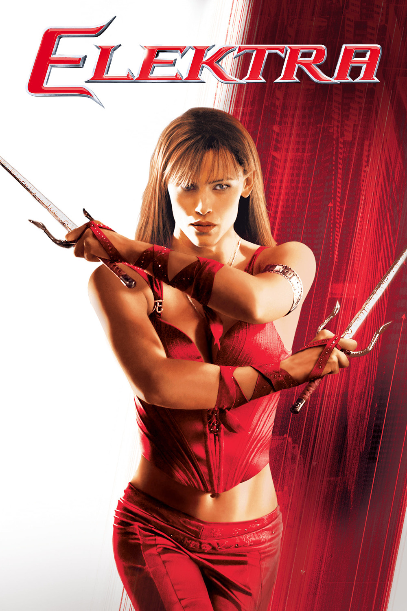

Мировая премьера: 14 января 2005
Слоган: Рождена, чтобы воевать. Живёт, чтобы убивать.
Сюжет: Получив смертельные ранения, Электра возвращается к жизни, но становится холодной и беспощадной наёмной убийцей. Обладая непревзойдённым мастерством боевых искусств и даром Кимагуре, позволяющим видеть будущее, она выполняет самые опасные задания, не испытывая ни жалости, ни сомнений. Однако очередной заказ заставляет Электру сделать выбор, который изменит её судьбу. В решающей схватке между добром и злом ей предстоит обрести искупление или окончательно погрузиться во тьму.
Режиссёр: Роб Боумен
В основе: Комиксы об Электре (США, выходят с 1981, автор – Фрэнк Миллер)
Серия: Сорвиголова
В ролях:
| Дженнифер Гарнер | Электра Начиос |
| Кирстен Праут | Эбби Миллер |
| Горан Вишнич | Марк Миллер |
| Теренс Стэмп | Стик |
| Уилл Юн Ли | Кириги |
| Колин Каннингэм | МакКейб |
| Кэри-Хироюки Тагава | Роси |
| Джейсон Айзекс | ДеМарко |
| Наташа Мальте | Чума |
| Боб Сапп | Стоун |
Бюджет: $ 43 млн.
Кассовые сборы в США: $ 24 млн.
Кассовые сборы в мире: $ 57 млн.
Продолжительность: 1 ч. 29 мин.
Рейтинг: 4.7